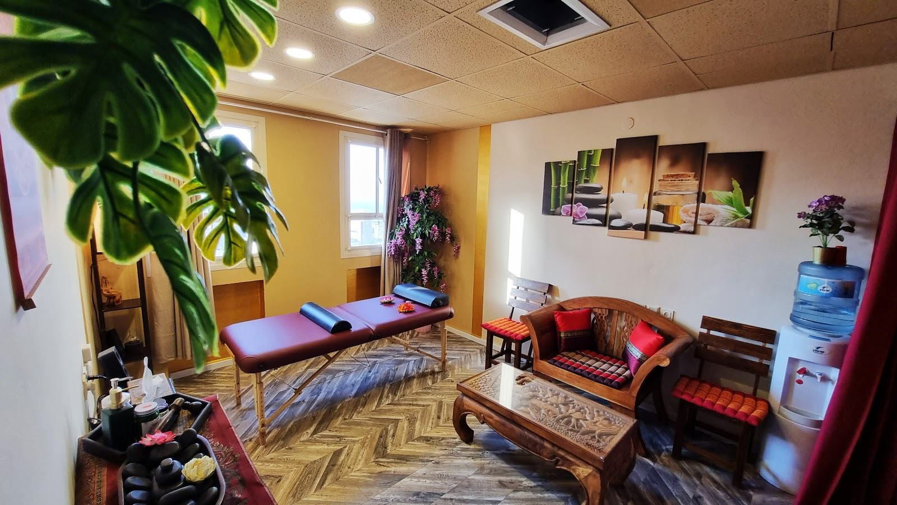
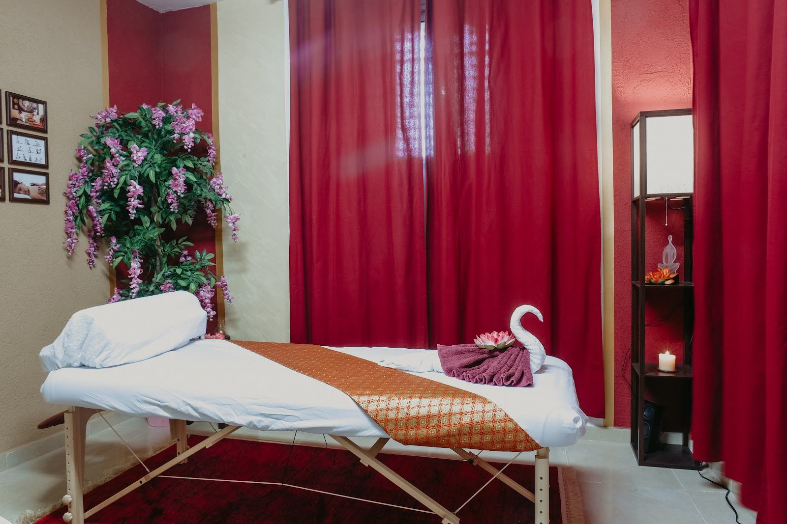
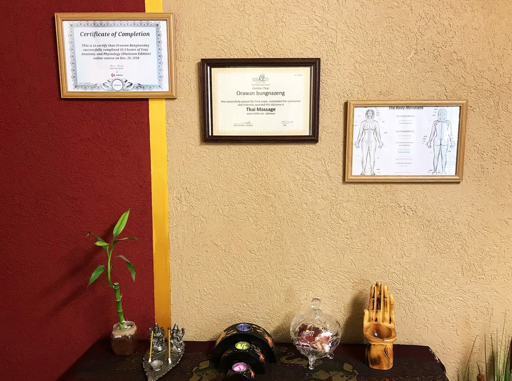
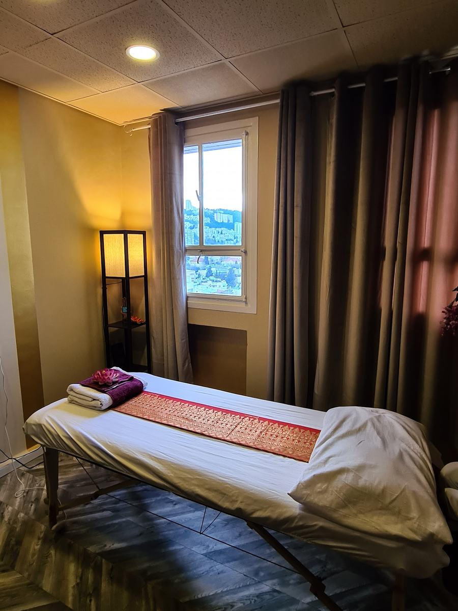
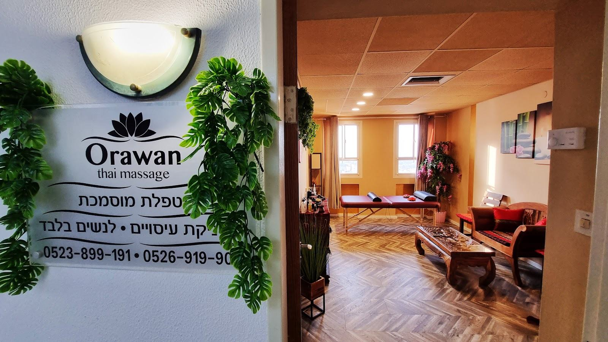
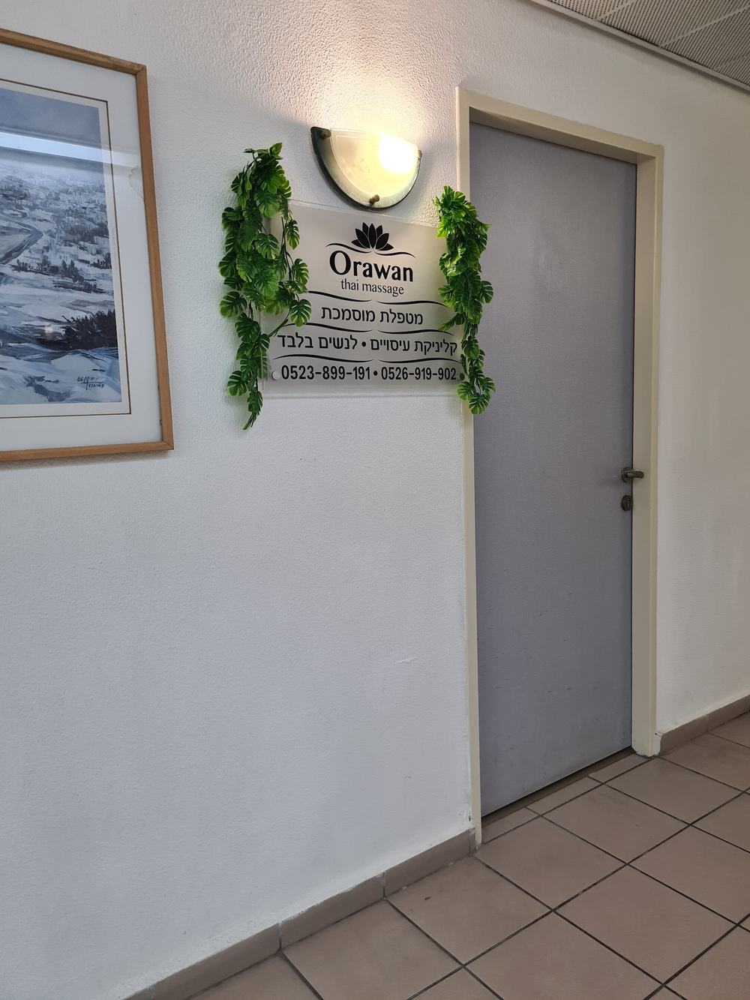

אורוואןOrawan עיסוי תאילנדי לנשיםThai massage for women
קליניקה לנשים בלבד ברחוב ח'ורי 1 בחיפה.A women-only massage room at 1 Khouri St, Haifa.
מגע רך, טכניקה משולבת וחדר בגוונים של תאילנד.A soft touch, a combined technique and a room in the colours of Thailand.
- לנשים בלבדWomen only
- עיסוי תאילנדי ומשולבThai and combined massage
- א׳–ה׳ 9:00–19:30 · ו׳ 9:00–15:00Sun–Thu 9:00–19:30 · Fri 9:00–15:00

החדר ברחוב ח'וריThe room on Khouri Street
וילונות אדומים, עץ טיק מגולף ואור מהחלון.Red curtains, carved teak and light from the window.
פינות של שקטQuiet corners
גררי או גללי. כל התמונות מהקליניקה עצמה.Drag or scroll. Every photo is from the room itself.




מה תפוס היום?What feels tight today?
בחרי אזורים ועוצמת מגע, וההודעה לאורוואן תיכתב לבד.Pick the areas and the pressure, and your message to Orawan writes itself.
מ-18 ביקורות בגוגלFrom 18 Google reviews
לכל הביקורות בגוגלRead them all on Google״כבר מהרגע שנפתחה הדלת עלה לי חיוך רחב על הפנים ותחושה שהנה לרגע קל באמצע האטרף קפצתי לתאילנד… ארוואן היתה קשובה לצרכים ולמידת הכאב.״
“From the moment the door opened a big smile spread across my face, a feeling that for a moment, in the middle of the rush, I’d hopped over to Thailand… Orawan listened to my needs and to how much it hurt.” (translated from Hebrew)
״הכרתי היום טכניקה משולבת, אבל מעבר לזה הכרתי אורוואן, בעלת ידע ואמפטיה, מגע רך… אורוואן משדרת רוגע, שלווה ובטחון.״
“Today I discovered a combined technique, but beyond that I met Orawan, knowledgeable and empathetic, with a soft touch… Orawan radiates calm, serenity and confidence.” (translated from Hebrew)
״היה פשוט מושלם, מקום נקי, אורוואן מקסימה, עדינה והכי חשוב מקצועית. יצאתי כמו חדשה ממנה.״
“It was simply perfect, a clean place, Orawan is lovely, gentle and most importantly professional. I came out feeling like new.” (translated from Hebrew)
״מעסה מאד נחמדה, אדיבה, ומקצועית. המקום נקי ומסודר. ממליצה בחום.״
“A very nice, kind and professional masseuse. The place is clean and tidy. Warmly recommended.” (translated from Hebrew)

ח'ורי 1, חיפה1 Khouri St, Haifa
לפי אחת הביקורות: יש חניה בכחול-לבן ברחובות באזור.One review mentions blue-and-white street parking nearby.